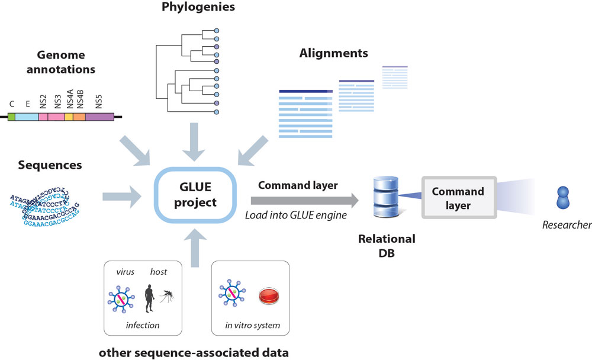
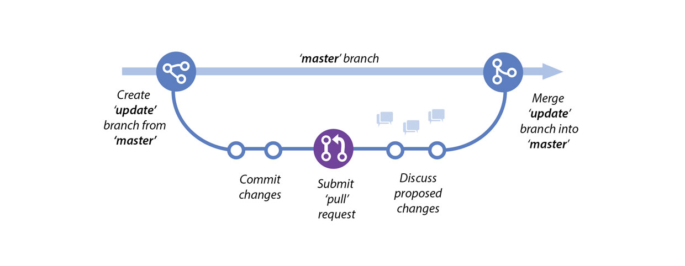
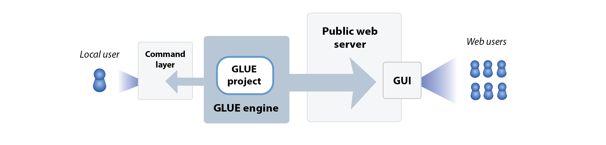

Comparative genomic analysis of arboviruses using GLUE
This is Arbovirus-GLUE, a collection of GLUE projects for arboviruses, developed as part of the CLIMADE initiative.
The overarching long-term goal of CLIMADE. is to predict, track and control diseases and epidemics that are amplified by human-caused climate change in the most affected countries in the world. CLIMADE will leverage the medical, scientific, and public health experience of epidemiology, ecology and evolution in the global south to establish a robust disease surveillance system, with which to quickly identify pathogens and track their evolution and spread, to control outbreaks before they become epidemics and epidemics before they become pandemics.
Arbovirus-GLUE currently incorporates the following GLUE projects:
- Dengue-GLUE: a GLUE project for Dengue virus (DENV)
- CHIKV-GLUE: a GLUE project for Chikungunya virus (CHIKV)
- YFV-GLUE: a GLUE project for yellow fever virus (YFV)
- BTV-GLUE: a GLUE project for bluetongue virus (BTV)
What is a GLUE project?
The GLUE software framework provides an extensible platform for implementing computational genomic analysis of viruses in an efficient, standardised and reproducible way.
GLUE is an open, integrated software toolkit that provides functionality for storage and interpretation of sequence data. It supports the development of “projects” containing the data items required for comparative genomic analysis (e.g. sequences, multiple sequence alignments, genome feature annotations, and other sequence-associated data).

Projects are loaded into the GLUE "engine", creating a relational database that represents the semantic relationships between data items. This provides a robust foundation for the implementation of systematic comparative analyses and the development of sequence-based resources. The database schema can be extended to accommodate the idiosyncrasies of different projects. GLUE provides a scripting layer (based on JavaScript) for developing custom analysis tools.
GLUE projects can not only incorporate all of the data items typically used in comparative genomic analysis (e.g. sequences, alignments, genome feature annotations) but can also represent the complex semantic links between these data items via a relational database. This 'poises' sequences and associated data for application in computational analysis, minimising the requirement for labour-intensive pre-processing of datasets. GLUE projects are equally suited for carrying out exploratory work (e.g. using virus genome data to investigate structural and functional properties of viruses) as they are for implementing operational procedures (e.g. producing standardised reports in a public or animal health setting).
Hosting of GLUE projects in an online version control system (e.g. GitHub) provides a mechanism for their stable, collaborative development, as shown below.


What do GLUE projects offer?
- Reproducibility. For many reasons, bioinformatics analyses are notoriously difficult to reproduce. The GLUE framework supports the implementation of fully reproducible comparative genomics through the introduction of data standards and the use of a relational database to capture the semantic links between data items.
- Reusable data objects and analysis logic. For many - if not most - comparative genomic analyses, data preparation is nine tenths of the battle. The GLUE framework has been designed to ensure that work spent preparing high-value data items such as multiple sequence alignments need only be performed once. Hosting of GLUE projects in an online version control system such as GitHub allows for collaborative management of important data items and community testing of hypotheses.
- Validation. Building GLUE projects entails mapping the semantic links between data items (e.g. sequences, tabular data, multiple sequence alignments). This process provides an opportunity for cross-validation, and thereby enforces a high level of data integrity.
- Standardisation of the genomic co-ordinate space. GLUE projects allow all sequences to utilise the coordinate space of a chosen reference sequence. Contingencies associated with insertions and deletions (indels) are handled in a systematic way.
- Predefined, fully annotated reference sequences: This project includes fully-annotated reference sequences for major lineages within the Hepadnaviridae family.
- Alignment trees: GLUE allows linking of alignments constructed at distinct taxonomic levels via an ""alignment tree" data structure. In the alignment tree, each alignment is constrained to a standard reference sequence, thus all multiple sequence alignments are linked to one another via a standardised coordinate system.
License
All GLUE projects in Arbovirus-GLUE are licensed under the GNU Affero General Public License v. 3.0.